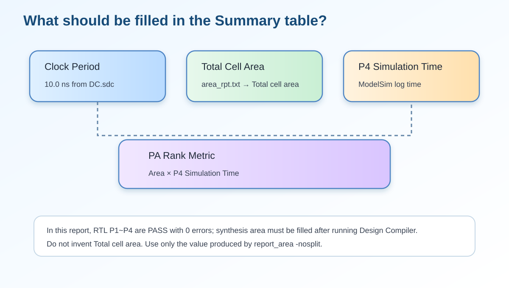
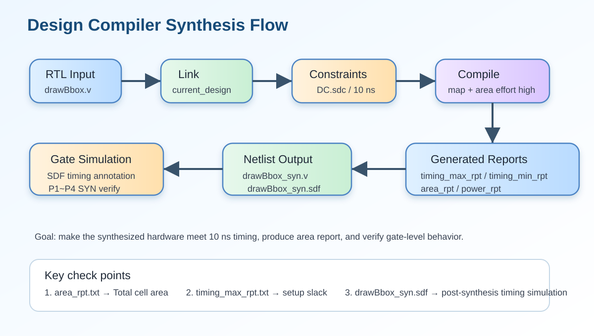
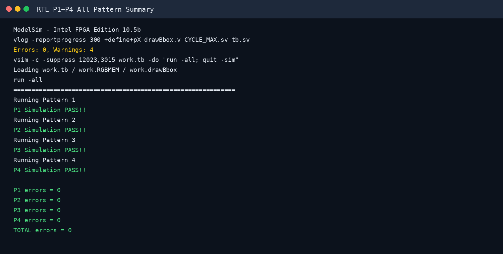
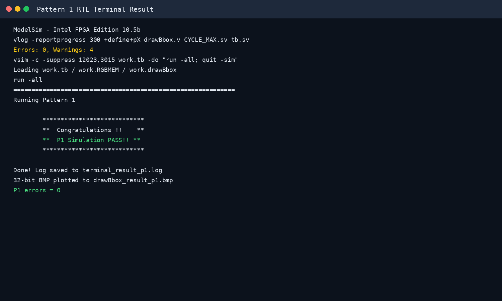
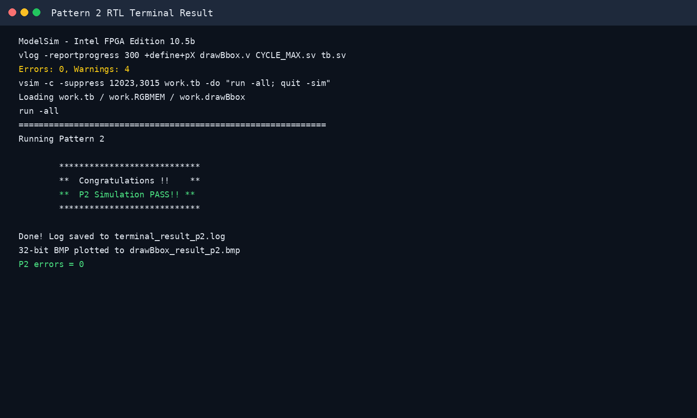
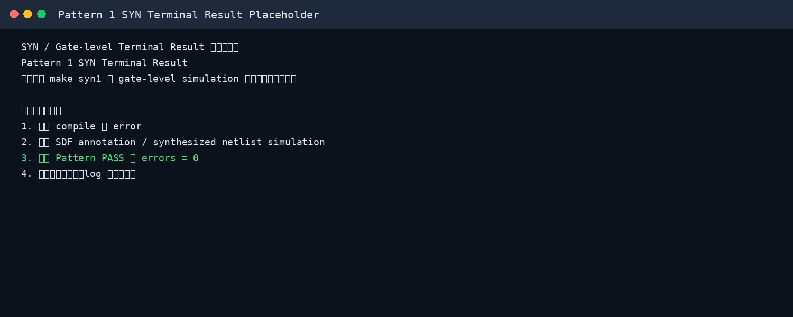
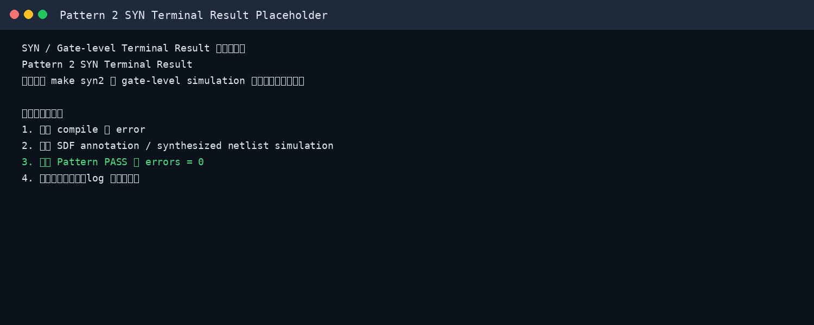

Clock Period、Total Cell Area、Post Simulation Time、Timing Report 與 Terminal Result
本頁整理第 7 題需要附上的設計數據、合成數據、時序報告與 RTL / SYN terminal 截圖。已由附件確認 RTL P1～P4 全部 PASS，總錯誤數為 0。
一、本題要求與作答重點
第 7 題要求列出並附圖證明下列項目：
tb.sv / CYCLE_MAX.sv 與 DC.sdc 設定相同。area_rpt.txt 或 Design Compiler report area 擷取。timing_max_rpt.txt 或 report_timing -delay max 擷取。二、最終填寫總表
| 項目 | 本次可填寫內容 | 資料來源與說明 |
|---|---|---|
| Clock period | 10.0 ns | CYCLE_MAX.sv 中設定 `define CYCLE_TIME 10.0。正式報告需確認 DC.sdc 也為 10.0 ns。 |
| Total cell area | 請填入 synthesis report 數值 | 目前附件未提供 area_rpt.txt 或 Design Compiler area 截圖。請填入 Total cell area。 |
| Post simulation time | RTL 合跑終止時間：24,011,725 ns | 目前附件提供的是 RTL P1～P4 合跑終端時間。若題目要求 PA Rank，建議填入 Pattern 4 gate-level post-simulation 的單獨時間。 |
| Max timing report | 請填入 WNS / critical path | 目前附件未提供 timing_max_rpt.txt。滿分報告需附最大延遲路徑截圖，並確認 slack 為非負或說明 timing 是否 met。 |
| RTL simulation | P1～P4 PASS，Total errors = 0 | ModelSim terminal 顯示 P1、P2、P3、P4 皆 PASS，最後 summary 顯示 total errors = 0。 |
| SYN simulation | 請附 make syn1～syn4 截圖 | 目前附件未提供 gate-level terminal log，因此 HTML 已放置可替換截圖區。 |
三、修正版數學式與評分指標
本題的數學式主要用於說明 clock period、post-simulation time、cell area 與 PA Rank 指標之關係。寫報告時要避免只貼截圖，應用公式說明數值如何得到。

四、Python code（Lab7.ipynb 對應流程）
Python notebook 的角色是建立 golden-like 參考流程，用來驗證 RTL 設計的每個影像處理階段是否合理。完整流程包含 RGB 讀檔、灰階化、Gaussian filter、Otsu threshold、mask、8-connected CCL、bounding box、overlay 與 golden comparison。
# Lab7.ipynb 核心流程摘要
H, W = 256, 256
GREEN = np.array([0, 255, 0], dtype=np.uint8)
# 1. 讀取 input_rgb*.txt 與 bbox_golden*.txt
rgb_img = load_rgb_txt(rgb_path, H, W)
golden_packed = load_packed_txt(golden_path, H, W)
# 2. RGB 轉 grayscale，使用 round to nearest, ties to even
gray = rgb_to_gray(rgb_img)
# 3. 3x3 Gaussian filter，邊界使用 Reflect 101
gauss = gaussian_3x3_reflect101(gray)
# 4. Otsu threshold
otsu_t, hist = otsu_threshold(gauss)
# 5. Mask + auto-polarity correction
mask_raw = (gauss > otsu_t).astype(np.uint8)
mask, inverted, fg_ratio = auto_polarity_correction(mask_raw)
# 6. 8-connected CCL + Bounding Box
labels, label_count = ccl_8_connected(mask)
bboxes = compute_bboxes(labels, label_count)
bboxes_valid = {lb: box for lb, box in bboxes.items() if not box["touch_border"]}
# 7. Overlay 綠色 bounding box，並與 golden 逐 pixel 比對
overlay_rgb = overlay_bboxes(rgb_img, bboxes_valid)
overlay_packed = rgb_to_packed(overlay_rgb)
accuracy = (overlay_packed == golden_packed).mean()五、Verilog code 對應設計說明
Verilog 設計以 drawBbox 作為主要硬體模組，透過 FSM 分階段完成整張 256×256 影像處理。資料路徑與 Python 流程一致，但硬體實作必須依 clock 逐步處理 memory address、state transition 與 SRAM/ROM control signal。


// drawBbox.v 核心 state 設計摘要
localparam [5:0]
S_IDLE = 6'd0,
S_LOAD = 6'd1, // 讀取 ImgROM RGB pixel
S_GRAY = 6'd2, // RGB to grayscale
S_HIST_CLEAR = 6'd3,
S_GAUSS_HIST = 6'd4, // Gaussian + histogram
S_OTSU_INIT = 6'd5,
S_OTSU_SCAN = 6'd6, // Otsu threshold
S_COUNT_HI = 6'd7,
S_POLARITY = 6'd8, // auto polarity correction
S_MASK_WRITE = 6'd9,
S_PARENT_INIT = 6'd10,
S_CCL_SCAN = 6'd11, // 8-connected CCL
S_BBOX_INIT = 6'd12,
S_BBOX_SCAN = 6'd13,
S_BOXMAP_CLEAR = 6'd14,
S_BOXMAP_GEN = 6'd15,
S_DRAW_WRITE = 6'd16, // overlay green bbox
S_DONE = 6'd17;在輸出階段，若目前 pixel 位於任一有效 bounding box 的上下左右邊界，則寫入綠色常數 32'h0000_FF00；否則保留原始 RGB pixel。若 component 碰到影像邊界，則依 Lab7 規則不畫 bounding box。
六、Synthesis / Timing / Area 操作流程
第 7 題除了 RTL PASS 之外，還必須證明 synthesis 後的 gate-level simulation 結果與 timing / area 報告。建議報告中放入下列流程圖與終端機截圖。


建議使用的 DC 指令
# 讀入 RTL 與 constraint
read_file -format verilog {./drawBbox.v}
current_design drawBbox
link
source ./DC.sdc
# Clock period 必須與 tb/CYCLE_MAX.sv 相同，例如 10.0 ns
# create_clock -period 10.0 [get_ports clk]
# 合成
set_fix_multiple_port_nets -all -buffer_constants [get_designs *]
set_max_area 0
compile -map_effort high -area_effort high
# 輸出報告
report_timing -path full -delay max -max_paths 5 > timing_max_rpt.txt
report_timing -path full -delay min -max_paths 5 > timing_min_rpt.txt
report_area -nosplit > area_rpt.txt
report_power -analysis_effort low > power_rpt.txt
write -format verilog -hierarchy -output drawBbox_syn.v
write_sdf drawBbox_syn.sdfCYCLE_MAX.sv 或 tb.sv 的 clock period 與 DC.sdc 的 create_clock -period 完全一致。七、Pattern 1～4 RTL Terminal Result
附件中的 ModelSim terminal 顯示 RTL simulation 已完成 P1～P4，且每一個 pattern 都印出 PASS。最後 summary 顯示 P1～P4 errors 全部為 0，TOTAL errors = 0。



八、Pattern 1～4 SYN Terminal Result 截圖區
目前附件未包含 gate-level / SYN terminal log，因此以下先放置正式報告用的截圖位置。完成 make syn1～make syn4 後，請將截圖替換為真實 terminal 結果。


SYN 截圖應包含的文字
| 項目 | 滿分截圖需要看到 |
|---|---|
| Pattern 1 SYN Terminal Result | make syn1 或等效指令、SDF annotation、P1 PASS / errors = 0。 |
| Pattern 2 SYN Terminal Result | make syn2 或等效指令、SDF annotation、P2 PASS / errors = 0。 |
| Pattern 3 SYN Terminal Result | make syn3 或等效指令、SDF annotation、P3 PASS / errors = 0。 |
| Pattern 4 SYN Terminal Result | make syn4 或等效指令、SDF annotation、P4 PASS / errors = 0；同時記錄 post simulation time。 |
九、輸出影像佐證
Terminal PASS 代表逐 pixel 比對通過；同時可附上 P1～P4 的結果圖作為視覺佐證。第 7 題主要看 terminal / synthesis 數據，但附圖能讓報告更完整。


十、可直接貼到報告的中文答案
十一、提交前檢查清單
| 檢查項目 | 狀態 | 說明 |
|---|---|---|
| Clock period | 已填 10.0 ns | 已由 CYCLE_MAX.sv 確認；仍需確認 DC.sdc 一致。 |
| Total cell area | 需補 | 請從 area_rpt.txt 或 Design Compiler report area 截圖填入。 |
| Post simulation time | 需確認 P4 SYN | 目前有 RTL 合跑時間；PA Rank 建議使用 P4 post-sim 單獨時間。 |
| Max timing report | 需補 | 請附 timing_max_rpt.txt 中 critical path 與 slack。 |
| Pattern 1～4 RTL | 已 PASS | RTL P1～P4 errors = 0。 |
| Pattern 1～4 SYN | 需補截圖 | 請以真實 gate-level terminal result 替換 placeholder。 |